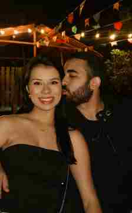
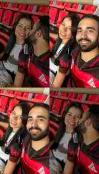
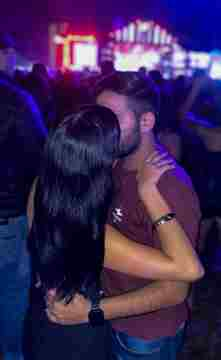

12 de agosto de 2026
2 anos de nós 💖
Dois anos desde que a nossa história começou. E, se depender de mim, ainda temos uma vida inteira para viver juntos.
Desde 12/08/2024 às 19:30







A música escolhida é Até Ficar Velhinho. Para tocar no site, coloque o arquivo MP3 com esse nome na pasta do projeto.